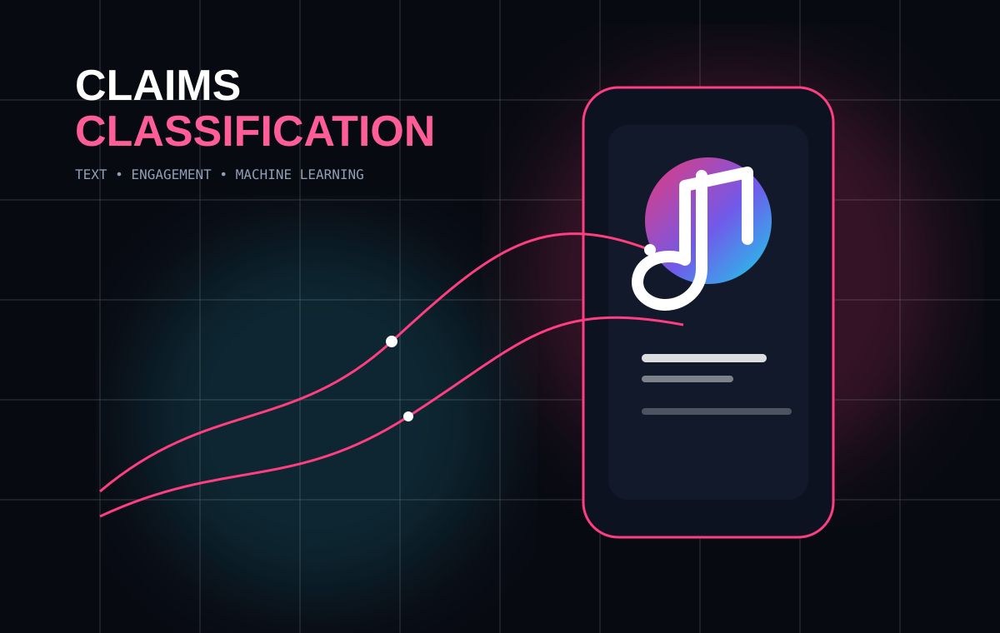
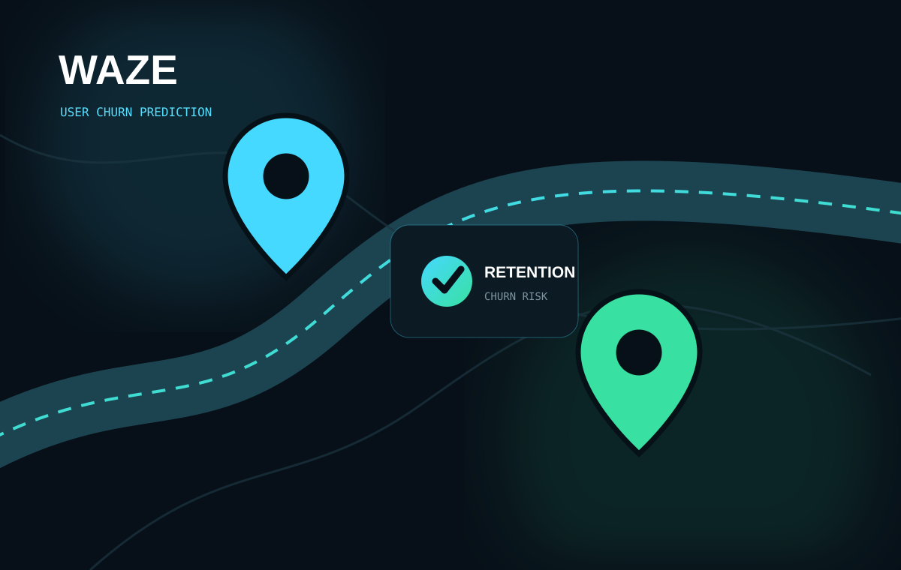
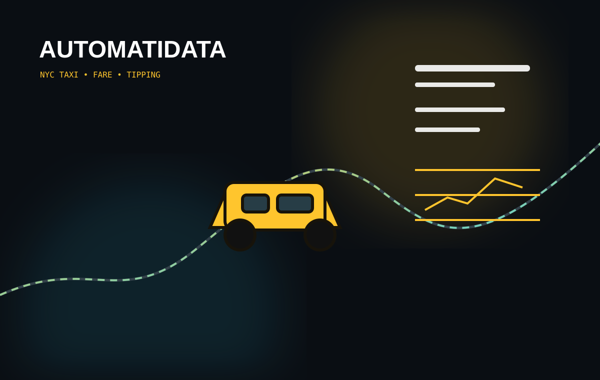
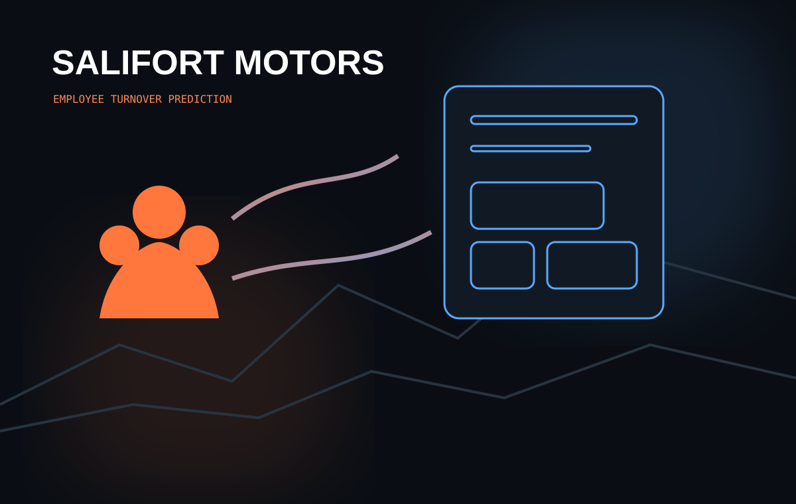

01 / CLASSIFICATION
TikTok
Claims
Text and engagement analysis to classify reported videos and support review prioritization.
View case study ↗
I'm Mohamed Mounir. I build analytical solutions that move from messy data to clear findings, predictive models, and business-focused recommendations.
Each case study follows the same analytical backbone, while the visual language changes with the problem: social content, mobility, urban transport, and workforce analytics.
Text and engagement analysis to classify reported videos and support review prioritization.
View case study ↗
Feature engineering and threshold tuning for a user churn prediction workflow.
View case study ↗
Fare estimation, payment-method analysis, and generous-tipping classification from trip data.
View case study ↗
Employee turnover prediction with feature engineering, model interpretation, and decision-support framing.
View case study ↗
Each service below is backed by a full case study above, not just a claim.
Flagging which customers are likely to leave, then tuning the decision threshold around the real cost of a false alarm versus a missed one, not just the highest accuracy number.
Using HR data to flag employees at elevated turnover risk and surface the workload and career patterns behind it, so people teams know where to look first.
Models that sort or prioritize incoming items, such as flagged content or reported cases, so human reviewers spend their time on the highest-risk cases first.
Connecting price, usage, and behavioral variables with a properly tested relationship, backed by confidence intervals and significance testing, not just a trend line.
Clear enough to be useful. The portfolio is built around the same habit I bring to analysis: define the question, validate the data, test the model, and explain what the result actually means.
I work across exploratory analysis, statistical testing, feature engineering, supervised learning, model evaluation, and data visualization. The goal is not a flashy metric. It is a defensible answer to a useful question.
Different domains force different modeling choices. Classification, regression, threshold selection, feature engineering, and statistical analysis all appear here with explicit limitations rather than hidden behind a single score.
Start a conversation ↗I'm interested in freelance projects involving analytics, predictive modeling, and turning operational data into something people can actually use.
Every project includes the technical notebook plus a concise business summary and proposal. The case-study pages are the starting point; the notebooks contain the deeper work.
Back to projects ↑